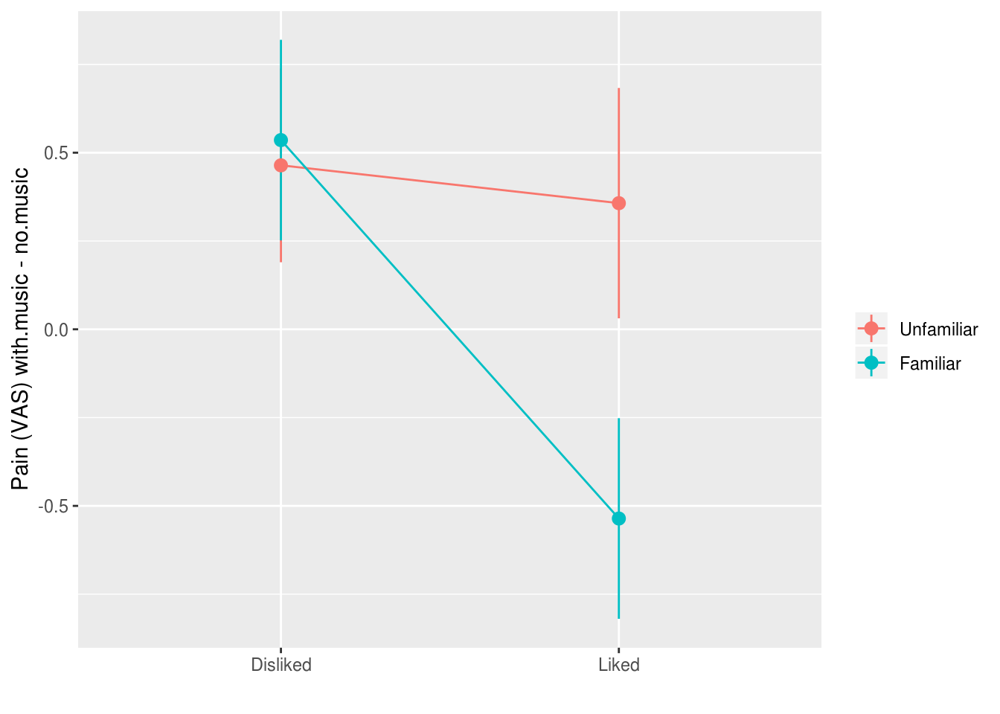
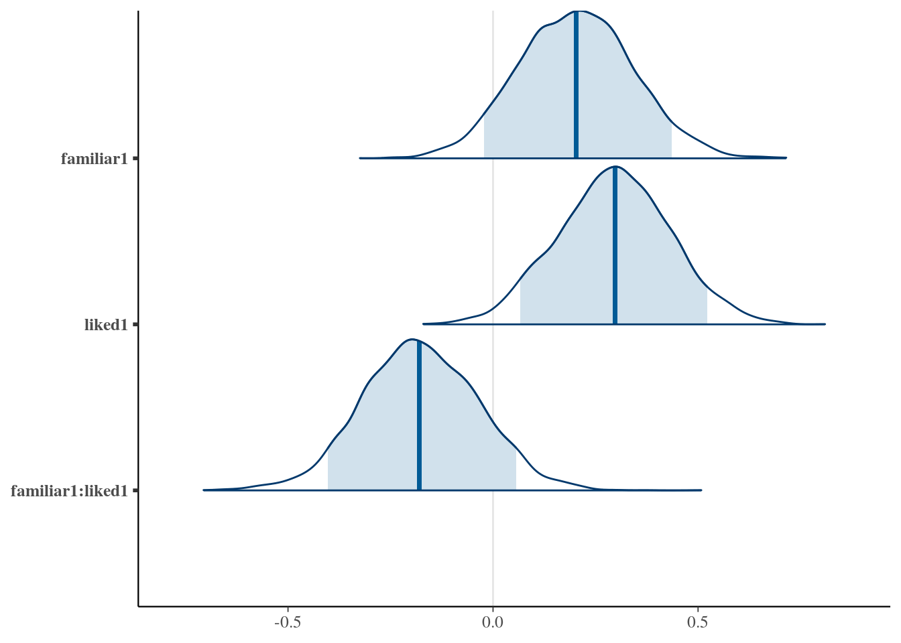
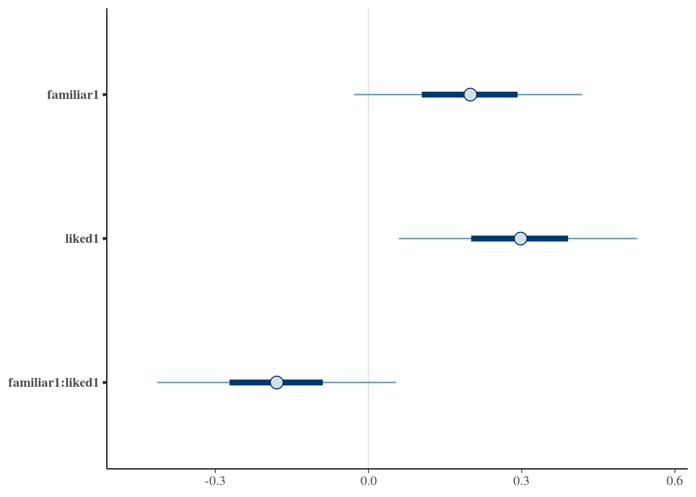

12 Baysian model fitting
Baysian fitting of linear models via MCMC methods
This is a minimal guide to fitting and interpreting regression and multilevel models via MCMC. For much more detail, and a much more comprehensive introduction to modern Bayesian analysis see Jon Kruschke’s Doing Bayesian Data Analysis.
Let’s revisit our previous example which investigated the effect of familiar and liked music on pain perception:
painmusic <- readRDS('data/painmusic.RDS')
painmusic %>%
ggplot(aes(liked, with.music - no.music,
group=familiar, color=familiar)) +
stat_summary(geom="pointrange", fun.data=mean_se) +
stat_summary(geom="line", fun.data=mean_se) +
ylab("Pain (VAS) with.music - no.music") +
scale_color_discrete(name="") +
xlab("")
# set sum contrasts
options(contrasts = c("contr.sum", "contr.poly"))
pain.model <- lm(with.music ~
no.music + familiar * liked,
data=painmusic)
summary(pain.model)
Call:
lm(formula = with.music ~ no.music + familiar * liked, data = painmusic)
Residuals:
Min 1Q Median 3Q Max
-3.5397 -1.0123 -0.0048 0.9673 4.8882
Coefficients:
Estimate Std. Error t value Pr(>|t|)
(Intercept) 1.55899 0.40126 3.885 0.000177 ***
no.music 0.73588 0.07345 10.019 < 2e-16 ***
familiar1 0.20536 0.13895 1.478 0.142354
liked1 0.30879 0.13900 2.222 0.028423 *
familiar1:liked1 -0.18447 0.13983 -1.319 0.189909
---
Signif. codes: 0 '***' 0.001 '**' 0.01 '*' 0.05 '.' 0.1 ' ' 1
Residual standard error: 1.47 on 107 degrees of freedom
Multiple R-squared: 0.5043, Adjusted R-squared: 0.4858
F-statistic: 27.22 on 4 and 107 DF, p-value: 1.378e-15Do the same thing again, but with with MCMC using Stan:
library(rstanarm)
options(contrasts = c("contr.sum", "contr.poly"))
pain.model.mcmc <- stan_lm(with.music ~ no.music + familiar * liked,
data=painmusic, prior=NULL)summary(pain.model.mcmc)
Model Info:
function: stan_lm
family: gaussian [identity]
formula: with.music ~ no.music + familiar * liked
algorithm: sampling
priors: see help('prior_summary')
sample: 4000 (posterior sample size)
observations: 112
predictors: 5
Estimates:
mean sd 2.5% 25% 50% 75% 97.5%
(Intercept) 1.7 0.4 0.9 1.4 1.7 2.0 2.5
no.music 0.7 0.1 0.6 0.7 0.7 0.8 0.9
familiar1 0.2 0.1 -0.1 0.1 0.2 0.3 0.5
liked1 0.3 0.1 0.0 0.2 0.3 0.4 0.6
familiar1:liked1 -0.2 0.1 -0.5 -0.3 -0.2 -0.1 0.1
sigma 1.5 0.1 1.3 1.4 1.5 1.6 1.7
log-fit_ratio 0.0 0.1 -0.1 0.0 0.0 0.0 0.1
R2 0.5 0.1 0.3 0.4 0.5 0.5 0.6
mean_PPD 5.3 0.2 4.9 5.2 5.3 5.5 5.7
log-posterior -206.2 2.3 -211.5 -207.6 -205.9 -204.6 -202.7
Diagnostics:
mcse Rhat n_eff
(Intercept) 0.0 1.0 1765
no.music 0.0 1.0 1741
familiar1 0.0 1.0 3528
liked1 0.0 1.0 4005
familiar1:liked1 0.0 1.0 3292
sigma 0.0 1.0 2551
log-fit_ratio 0.0 1.0 2059
R2 0.0 1.0 1878
mean_PPD 0.0 1.0 4074
log-posterior 0.1 1.0 885
For each parameter, mcse is Monte Carlo standard error, n_eff is a crude measure of effective sample size, and Rhat is the potential scale reduction factor on split chains (at convergence Rhat=1).Posterior probabilities for parameters
library(bayesplot)
mcmc_areas(as.matrix(pain.model.mcmc), regex_pars = 'familiar|liked', prob = .9)
mcmc_intervals(as.matrix(pain.model.mcmc), regex_pars = 'familiar|liked', prob_outer = .9)
Credible intervals
Credible intervals are distinct from confidence intervals
TODO EXPAND
params.of.interest <-
pain.model.mcmc %>%
as_tibble %>%
reshape2::melt() %>%
filter(stringr::str_detect(variable, "famil|liked")) %>%
group_by(variable)
params.of.interest %>%
tidybayes::mean_hdi() %>%
pander::pandoc.table(caption="Estimates and 95% credible intervals for the parameters of interest")
------------------------------------------------------------------------------
variable value .lower .upper .width .point .interval
------------------ --------- ---------- -------- -------- -------- -----------
familiar1 0.2031 -0.06619 0.4764 0.95 mean hdi
liked1 0.295 0.02959 0.5671 0.95 mean hdi
familiar1:liked1 -0.1773 -0.4606 0.0886 0.95 mean hdi
------------------------------------------------------------------------------
Table: Estimates and 95% credible intervals for the parameters of interestBayesian ‘p values’ for parameters
We can do simple arithmetic with the posterior draws to calculate the probability a parameter is greater than (or less than) zero:
params.of.interest %>%
summarise(estimate=mean(value),
`p (x<0)` = mean(value < 0),
`p (x>0)` = mean(value > 0))
# A tibble: 3 x 4
variable estimate `p (x<0)` `p (x>0)`
<fct> <dbl> <dbl> <dbl>
1 familiar1 0.203 0.071 0.929
2 liked1 0.295 0.0145 0.986
3 familiar1:liked1 -0.177 0.895 0.105Or if you’d like the Bayes Factor (evidence ratio) for one hypotheses vs
another, for example comparing the hypotheses that a parameter is > vs. <= 0,
then you can use the hypothesis function in the brms package:
pain.model.mcmc.df <-
pain.model.mcmc %>%
as_tibble
brms::hypothesis(pain.model.mcmc.df,
c("familiar1 > 0",
"liked1 > 0",
"familiar1:liked1 < 0"))
Hypothesis Tests for class :
Hypothesis Estimate Est.Error CI.Lower CI.Upper Evid.Ratio
1 (familiar1) > 0 0.20 0.14 -0.02 Inf 13.08
2 (liked1) > 0 0.30 0.14 0.07 Inf 67.97
3 (familiar1:liked1) < 0 -0.18 0.14 -Inf 0.06 8.50
Post.Prob Star
1 0.93
2 0.99 *
3 0.89
---
'*': The expected value under the hypothesis lies outside the 95%-CI.
Posterior probabilities of point hypotheses assume equal prior probabilities.Here although we only have a ‘significant’ p value for one of the parameters, we can also see there is “very strong” evidence that familiarity also influences pain, and “strong” evidence for the interaction of familiarity and liking, according to conventional rules of thumb when interpreting Bayes Factors.
TODO - add a fuller explanation of why multiple comparisons are not an issue for Bayesian analysis [@gelman2012we], because p values do not have the same interpretation in terms of long run frequencies of replication; they are a representation of the weight of the evidence in favour of a hypothesis.
TODO: Also reference Zoltan Dienes Bayes paper.